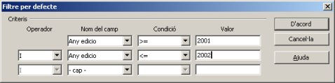

Ara estudiarem:
Actualment ens passa que tenim molta informació per tot arreu
(internet, televisió, ràdio, diaris, discos, CD, DVD, etc) i el nostre
problema és com tractar-la, com trobar una dada concreta enmig de tot
un munt d'elements diversos: és com trobar una agulla en un…

Per ajudar-nos en la nostra feina diària, entren en joc les Bases de Dades: seran una eina que ens ajudarà a treballar amb tota aquesta descomunal acumulació de dades, d'informació que ens està omplint la vida moderna.
En el mòdul anterior hem vist com un programa de Base de Dades relacional com és l'Open Base ens permet crear unes taules en les quals incorporem la informació. En les anteriors pràctiques d'aquest mòdul hem relacionat les taules i creat una estructura.
Però aquesta informacióo estructurada, ens serviria de poc si en el moment que la tenim tota incorporada no hi hagués alguna forma de trobar allò que ens interessa dins del conjunt global.
Aquí entren en joc les eines de cerca i filtrat de la informació. Així en aquest mòdul es tractarà de forma detallada n dels dos elements principals d'aquesta funció: FILTRES. L'altre elements important de recerca d'informació, molt més potent, s'estudiarà en el següent mòdul: les CONSULTES.
I com que si les coses no es fan en ordre no es poden entendre, anirem pas a pas. Primer caldrà explicar els filtres, el concepte i com es fan amb alguns exemples.
Sobre les dades més o menys grans d'una taula, en moltes ocasions ens interessarà trobar un registre concret. El filtre és, tal com diu la paraula, una cerca d'una informació que se'ns mostra en pantalla ocultant la resta. És a dir, si volem triar els alumnes de tercer de la resta dels del centre, el filtre ocultarà tots els alumnes del centre menys els de tercer.

Les diferents modalitats de filtres que podem crear amb el programa Open Base són els que s'anomenen automàtic i estàndard, els quals venen representats pels botons de la barra representada en la imatge anterior.
Ara que sabem la funció i els tipus que n'hi ha, estem en disposició de fer-ne uns quants per acabar-ho de comprendre.
Aquests botons ens permetran treballar amb els filtres, tal com podem veure a continuació.
Observem aquesta imatge en la qual es mostren les funcions de cada botó dels filtres:
Per tant, el primer botó que ara provarem serà el del filtre automàtic, que és el del primer botó de l'esquerra de la imatge superior.
Per tant, si obrim una taula Llibres com la que es mostra a la imatge anterior i fem un clic en el camp (columna) on hi ha les dades de l'Any edicio a la dada “2000”, i després activem, mitjançant un clic el botó esmentat, el resultat serà aquest:
Per tant, què ha passat? Doncs que el filtre ha fet la seva funció, ens amaga totes les dades que no compleixin la condició Any edicio = a 2000, per tant, ja tenim les dades desitjades en pantalla i amb elles podrem treballar de forma independent del total de registres. Si volem eliminar el filtrat i mostrar de nou tots els registres, només hem de fer clic al botó que té l'aspa vermella i tornarem a la situació inicial. Podem fer-ne més proves amb els diferents anys i veure'n els resultas. També podem fer proves amb els altres camps, com per exemple, tot els que el seu lloc d'edició sigui “mx”, és a dir, Mèxic. El resultat que ens mostrarà són aquests pocs registres:
Ara provarem l'altre tipus de filtre, que ens permetrà fer unes recerques més detallades i completes, podríem dir que es troba ja més dins de les consultes per la seva potència d'acció.
Aquest tipus de filtre permet establir uns paràmetres més detallats i complexes que en el cas anterior. Poden afectar a més d'un camp a l'hora i introduir les expressions condicionals amb el i i el o lògics.
Així sobre les dades abans presentades, anem a suposar vàrios exemples que podem fer de filtrats més complexes:
El resultat que obtindrem serà:
Està molt bé, oi? Doncs ara anem a fer més proves amb aquesta modalitat de filtrat.

I el resultat que obtindrem serà:
Com podem veure, el signe > = (major o igual) i el signe < = (menor o igual) permeten precisar molt més en el filtrat. Fixeu-vos en els resultats obtinguts. En aquest cas hem utilitzat el criteri i lògic, que agafa entre un de petit i un de més gran.
I el resultat obtingut serà aquest:

També podem fer proves que afectin a diferents camps a l'hora o de forma simultània. Ara em posem un exemple:
I el resultat obtingut seria com es pot veure aquí:

I a partir d'aquí només la imaginació de cadascú podrà imposar límits per treballar…

|
|

|
|